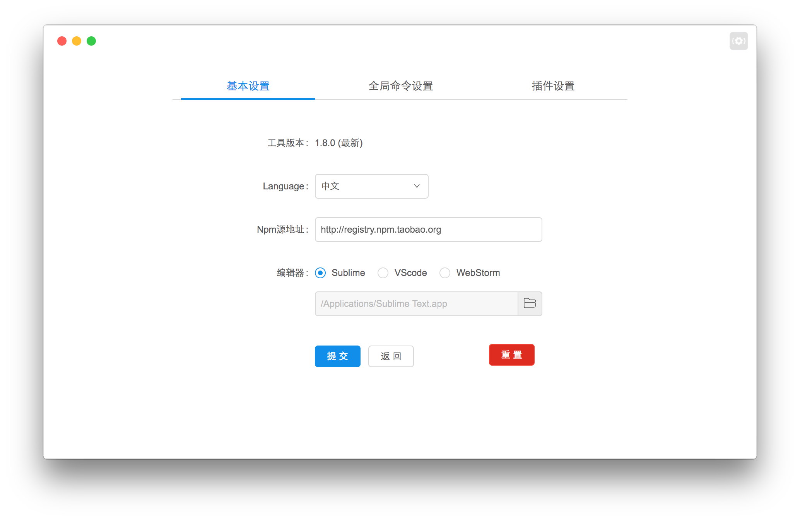

工具设置
入口处:

设置页面: 
1. 项目版本
如果有新版本，会在右侧出现更新按钮
2. 编辑器
目前支持三种编辑器，'Sublime' & 'VScode' & 'WebStorm'。
windows & linux用户请选择到可执行文件，mac 用户请选择到应用。
如果用户使用的不是以上三种编辑器，可以在 'VScode' & 'WebStorm' 里面的路径选择里尝试下选择到自己喜欢的编辑器，如果一个都无法运行，那么十分抱歉了。 /(T.T)\
3. 中英文
其实英文是用来装逼用的。
4. npm 源
源策略是工具的重点内容。
在这里设置的是全局的源地址，当项目没有设置源，会采用全局的源设置。建议用户安装工具之后直接先来设置页面设置源。
如果用户没有设置源，那么工具会采用默认源作为全局源。
源策略的优先级为：项目源 > 全局源 > 默认源。
源列表目前列出了 npm, taobao, alibaba 三个源，非阿里用户请不要尝试使用此源，不然安装项目更新依赖都会失败。
如果用户使用的是私有源，可以在此添加私有源地址。
5. 重置按钮
点击该按钮，会删除用户所有与 nowa 有关的数据然后重启。
实际删除的是用户目录下的 .nowa-gui 文件达到清除数据的目的。